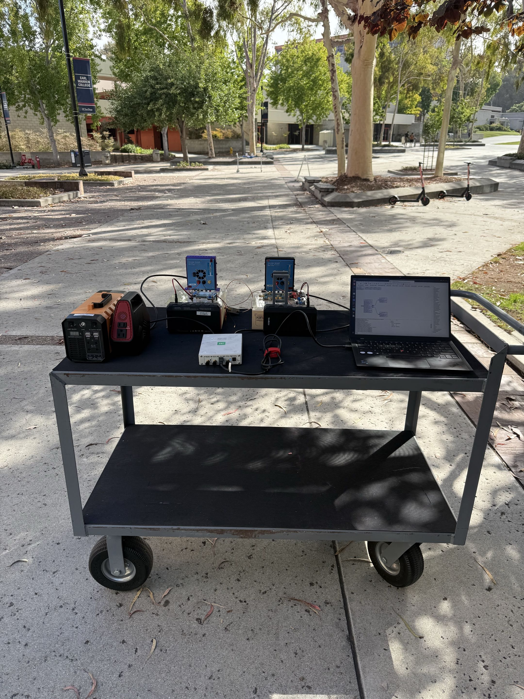
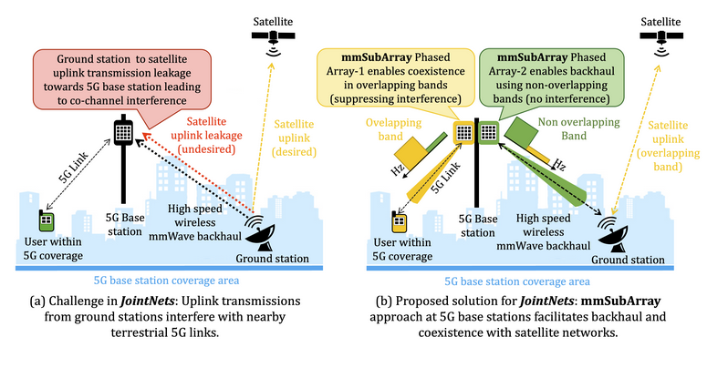
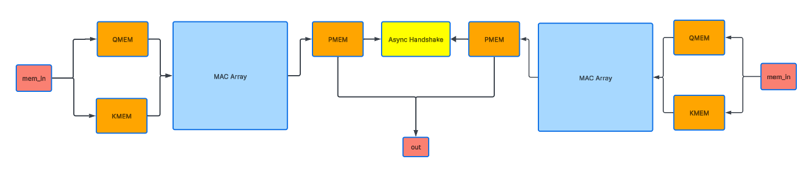
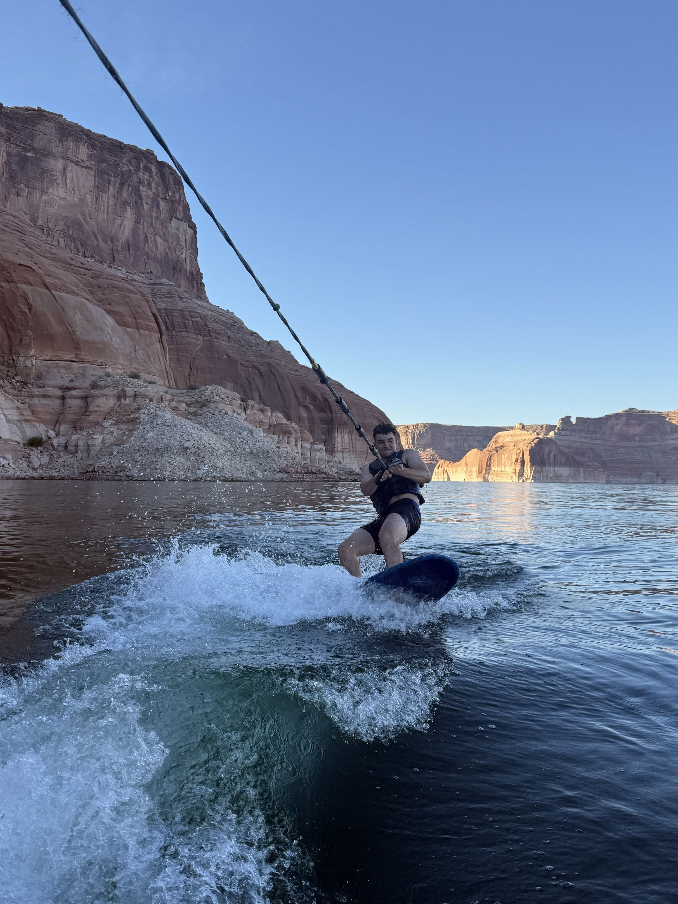

📡 Wireless Systems
OFDM, MIMO, mmWave, phased arrays, channel estimation, SDR hardware testbeds, and IEEE-level research.
MS EE · UC San Diego · IEEE Co-Author
I'm Luke Wilson, building mmWave MIMO testbeds, end-to-end OFDM platforms, and synthesizable RTL from RF front-end to algorithm. Currently pursuing an MS in Electrical Engineering at UCSD while conducting research at WCSNG.

// current focus
OFDM, MIMO, mmWave, phased arrays, channel estimation, SDR hardware testbeds, and IEEE-level research.
RTL design, VLSI, synthesizable SystemVerilog, Cadence Virtuoso, and timing-aware ASIC implementation.
DSP algorithms, channel modeling, beamforming, MATLAB and Python automation, and measurement pipelines.
// selected work

Wireless Systems Research
Built a 2×2 mmWave portable hardware testbed to extract channel state information and characterize near-field propagation. Fully automated data collection using MATLAB, Python, GNU Radio, and Linux, expanding the testing range significantly and obtaining critical CSI results. Co-authored manuscript submitted to IEEE INFOCOM 2026, currently under peer review.
RF & Phased Arrays
Programmed phased array weights to overcome interference from a strong jammer signal in a live RF hardware environment. Engineered a testbed using PlutoSDR, USRP B210, and ADF5355 to demonstrate system efficacy with real measurements. Led remote team collaboration and code organization through GitHub.

VLSI & Digital Design
RTL-designed dual-core attention accelerator in Verilog with an 8×8 systolic MAC array, async CDC handshake between clock domains, and sparsity-aware power gating. Synthesized and place-and-routed in Cadence targeting 1 GHz.

// additional work
VLSI / Circuit Design
8-bit adder design in Cadence Virtuoso capable of operating above 1.8 GHz. Achieved 3.1 GHz performance through multi-style experimentation with Kogge-Stone Complementary Logic.
Digital Design / Communications
SystemVerilog convolutional encoder and Viterbi decoder chain with branch metric computation, add-compare-select logic, rotating survivor memory banks, and traceback output reconstruction.
Digital Interface Design
UART transmitter, receiver, and loopback top level in SystemVerilog using FSM-based control with self-checking testbenches for byte-accurate serial communication verification.
Control / Datapath Design
Memory-backed encryptor driven by a programmable 6-bit LFSR with configuration loading, preamble generation, encrypted payload writes, and self-checking verification.
// experience
Designed wireless communication simulations and followed up with hardware testbeds. Collaborated with PhD students on experiments spanning DSP algorithms, RF measurements, and system-level evaluation. Co-authored manuscript submitted to IEEE INFOCOM 2026.
Hosted office hours and tutoring sessions covering transmission lines, Maxwell's equations, wave propagation, and optics. Evaluated student performance through grading homework, exams, and projects.
Coursework in VLSI and system-level circuit design, communication networks and coding theory, random processes, information theory, machine learning for engineering systems, microwave/RF systems, and signal processing.
Coursework in digital signal processing, communication systems, VLSI digital circuits, probability and random processes, electromagnetism, deep learning, and linear control theory.
Assisted restoration crews on active job sites handling water damage, fire cleanup, and mold remediation. Operated industrial drying and extraction equipment and learned to work efficiently under physically demanding conditions. Built a strong work ethic through hands-on, results-driven fieldwork.
Supported front-of-house operations in a high-volume restaurant environment. Developed teamwork, communication, and composure under pressure, keeping service running smoothly during peak rushes.
// technical profile
// recognition
Booker Award recipient at UC San Diego, high school valedictorian, 99th percentile SAT, and co-author on a near-field MIMO ground station paper currently under peer review at IEEE INFOCOM 2026.

// outside engineering

Training helps me build discipline and focus my mind. I practice my form carefully so I can keep pushing my limits without risking injury. Progress that compounds over time.
Surfing is my reset button, where I escape into the water and appreciate the ocean. Growing up in San Diego, the water has always been my place to decompress and find clarity.
When I want extended time in nature, camping is the answer. There's nothing like sitting around a campfire exchanging ideas with friends and family, away from everything else.
I have a big appetite, so I focus on food that fuels me in the gym without weighing me down, though I love a good treat every once in a while. My range runs from slow-cooked stews to Greek bowls.
Pool is where strategy meets execution. I've been playing since I was a kid and the competitive side of it never gets old. Every shot is a small puzzle: angles, spin, positioning. I love the mental game as much as the physical one.
I'm genuinely fascinated by AI and where it's headed. I stay current with the latest tools and models, both out of curiosity and to sharpen my own workflow. Understanding how to operate in this shifting landscape feels less optional and more essential every day.
// contact
Looking for opportunities in wireless systems, RF, digital design, RTL, and verification. Open to research roles, internships, and full-time positions.
{kind=link}
{kind=link}
{kind=link}
{kind=link}